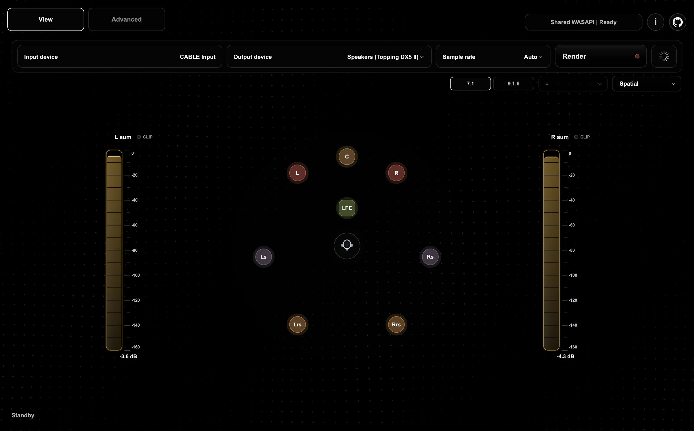

Capture sixteen discrete channels.
Apple Music, Dolby Access and any Windows player feed VB-CABLE as a full 9.1.6 or 7.1 bed. The renderer reads every channel, untouched.
Shared WASAPI | ULTRA Mode
A native WASAPI downmix renderer for Windows. Capture 7.1 or 9.1.6 from VB-CABLE, fold it through a locked matrix, and play it on the stereo DAC you already love.
01 The signal
Apple Music, Dolby Access and any Windows player feed VB-CABLE as a full 9.1.6 or 7.1 bed. The renderer reads every channel, untouched.
Fronts, sides, rears and heights are summed into left and right. The centre lands at −3 dB on both sides and LFE is lifted and shared. The coefficients are pinned by tests.
Preamp, PEQ, correction and a protective limiter run in native code, then two clean channels leave through shared WASAPI with 128-frame periods.

02 The renderer
The real app, rendered frame by frame. Scroll to take the tour.
Route
VB-CABLE is found for you. Pick the speakers or DAC you love, at the rate it prefers.
Render
Shared WASAPI with 128-frame periods and MMCSS scheduling, live in a heartbeat.
Spatial
Each speaker glows with its own level, around you, as the music plays.
9.1.6
Wides, rears and six height channels, each with its own place in the room.
Sum meters
Left and right sums, read from −160 dBFS to full scale, with a clip indicator on each side.
Channels
Switch to Channels for a capsule strip of every input, same colours, same signal.
Advanced
Preamp, upmix, PEQ, correction and trim, kept together in one profile.
03 Under the hood
Shared WASAPI with 128-frame periods, three periods of headroom and MMCSS scheduling. Buffers scale with sample rate, so the callback budget holds at 48, 96 and 192 kHz.
Change the Windows default output and your saved profile follows. Music keeps playing while the bridge retargets.
Device invalidation, interruptions and silent resumes are detected and the route is rebuilt once. No restart needed.
Paste Equalizer APO–style text for a global curve and a per-side stereo correction. Parsing is debounced and never touches the audio thread.
Route, preamp, layout, PEQ, correction and trim, saved as one. Switch with a click from either page.
The live path runs in a native WASAPI DLL with a real-time callback. Python is the control surface, never the audio thread.
04 Signal chain
05 Setup
Set Windows, or your player, to play through CABLE Input as a multichannel device.
The renderer captures the cable for you. Choose your speakers or DAC as the output.
Start rendering, save a profile, and turn on Smart Switching so it follows Windows.
06 Questions
No. The production path is shared WASAPI, so Apple Music, VLC, browsers, Bluetooth endpoints and other Windows audio keep working alongside it.
Not unless you ask it to. The downmix matrix is fixed and pinned by tests. PEQ, correction and Sound Enhancer are off until you enable them.
The native backend reports stream stops, reroutes and interruptions. The renderer checks that audio is flowing after every change and rebuilds the route once if it isn’t.
Yes. Auto-start on Boot adds a Startup-folder shortcut. No admin rights are needed, and old Downmix launchers are cleaned up.
Free and open source. Download it and keep the music playing.